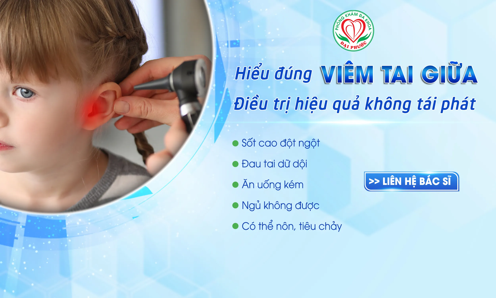
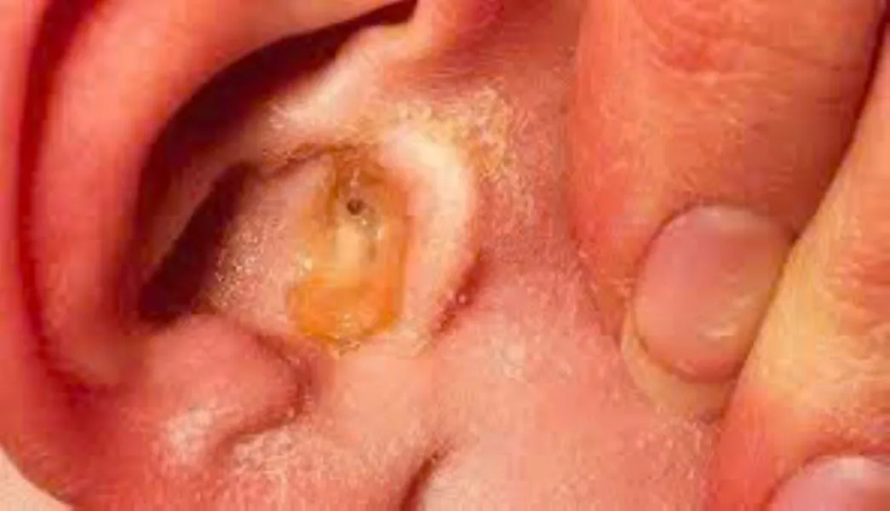
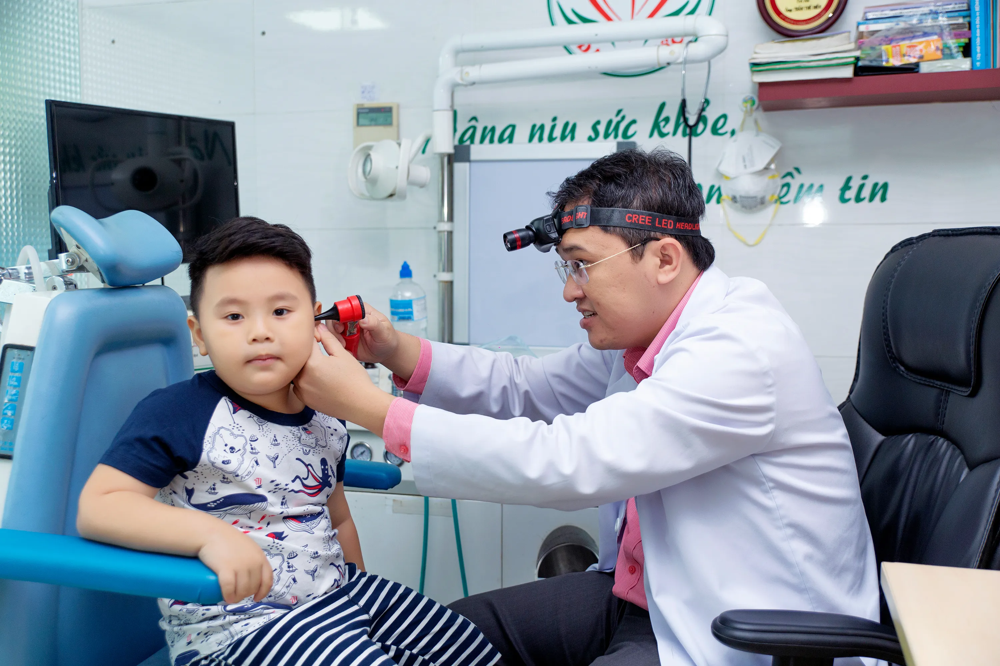

Viêm Tai Giữa Cấp Tính Ở Trẻ Em: Nguyên Nhân Và Triệu Chứng Cần Biết

Viêm Tai Giữa Cấp Tính Ở Trẻ Em: Nguyên Nhân Và Triệu Chứng Cần Biết
Viêm tai giữa cấp tính là bệnh phổ biến nhất ở trẻ nhỏ. Theo thống kê, 8 trên 10 trẻ em sẽ bị ít nhất 1 lần trước 3 tuổi. Đây là nguyên nhân khiến trẻ đau tai dữ dội, sốt cao và quấy khóc liên tục - điều khiến nhiều bậc phụ huynh lo lắng và hoang mang.

Hiểu rõ bệnh này sẽ giúp cha mẹ nhận biết sớm, xử lý đúng cách và biết khi nào cần đưa con đi khám ngay lập tức.
Viêm Tai Giữa Cấp Tính Là Gì?
Nói đơn giản: Viêm tai giữa cấp tính là tình trạng bên trong tai của trẻ bị nhiễm trùng đột ngột và nặng, sưng tấy. Vị trí viêm nằm ở tai giữa - khoang không khí nhỏ sau màng nhĩ, nơi có những xương nhỏ giúp trẻ nghe được âm thanh.
Tại sao lại viêm? Vì tai giữa nối thẳng với mũi họng qua một ống nhỏ gọi là vòi nhĩ. Khi trẻ bị cảm lạnh, vi khuẩn từ mũi họng sẽ "bò lên" tai gây viêm thông qua vòi nhĩ.
Đặc điểm của viêm tai giữa cấp tính:
- Khởi phát đột ngột trong 1-2 ngày (khác với viêm mạn tính kéo dài tháng)
- Triệu chứng nặng: đau tai dữ dội, sốt cao đột ngột
- Thường sau cảm lạnh 2-3 ngày
Tại Sao Trẻ Em Hay Bị Viêm Tai Giữa Cấp Tính?
1. Cấu Tạo Tai Khác Người Lớn
Ở trẻ nhỏ:
- Vòi nhĩ rất ngắn, rộng và nằm ngang
- Vi khuẩn dễ dàng từ mũi họng "leo lên" tai
- Dịch mủ khó thoát ra ngoài
Ở người lớn:
- Vòi nhĩ dài, hẹp và nằm nghiêng
- Vi khuẩn khó lên tai hơn
- Dịch mủ dễ thoát ra
2. Sức Đề Kháng Còn Yếu
- Trẻ nhỏ chưa có đủ kháng thể chống vi khuẩn
- Dễ bị cảm lạnh, viêm họng
- Khi có cảm lạnh, dễ dẫn đến viêm tai
3. Thói Quen Sinh Hoạt
- Đi nhà trẻ sớm, tiếp xúc nhiều vi khuẩn
- Chưa biết rửa tay, che miệng khi ho
- Hay đưa tay bẩn vào mũi miệng
Nguyên Nhân Trực Tiếp
Trình Tự Phát Bệnh Thường Gặp:
Ngày 1-2: Trẻ bị cảm lạnh, sổ mũi
Ngày 2-3: Mũi họng sưng, tắc ống vòi nhĩ
Ngày 3-4: Vi khuẩn từ mũi họng bò lên tai
Ngày 4-5: Viêm tai giữa cấp tính bùng phát
Vi Khuẩn Gây Bệnh Chính:
1. Vi khuẩn phế cầu (phổ biến nhất)
- Gây viêm nặng, đau tai dữ dội
- Sốt cao trên 39°C
2. Vi khuẩn Hib
- Triệu chứng nhẹ hơn
- Giảm nhiều nhờ vaccine
3. Virus cảm lạnh
- Là "thủ phạm" khởi đầu
- Làm sưng mũi họng, tạo điều kiện cho vi khuẩn
Dấu Hiệu Nhận Biết Theo Độ Tuổi
Trẻ 6 Tháng - 2 Tuổi (Rõ Ràng Nhất)
Triệu chứng điển hình:
- Sốt cao đột ngột (38,5-40°C)
- Đau tai dữ dội: Trẻ chỉ tay vào tai, khóc khi chạm
- Ăn uống kém: Bỏ bữa, không chịu ăn
- Ngủ không được: Đau nhiều vào ban đêm
- Có thể nôn, tiêu chảy
Trẻ Từ 2 Tuổi Trở Lên (Nói Được)
Trẻ có thể nói:
- "Con đau tai", "Tai con buồn"
- "Có cái gì trong tai con"
Dấu hiệu khác:
- Nghe kém: Tăng âm lượng TV, hỏi lại nhiều
- Khó tập trung học và chơi
- Chóng mặt nhẹ (ít gặp)

Triệu Chứng Kèm Theo Quan Trọng
Đặc Điểm Sốt Viêm Tai Giữa Cấp Tính:
- Sốt cao đột ngột (từ bình thường lên 39°C trong vài giờ)
- Khó hạ: Thuốc hạ sốt chỉ đỡ 2-3 tiếng rồi lên lại
- Kéo dài: 3-5 ngày nếu không điều trị
- Kèm run rẩy khi sốt cao
Triệu Chứng Cảm Lạnh Trước Đó:
Thường có 1-3 ngày trước khi viêm tai:
- Sổ mũi, nghẹt mũi
- Ho khan
- Hắt hơi
- Đau họng nhẹ
Khi Nào Cần Đi Khám?
Khi trẻ có các dấu hiệu sau:
- Co giật bất kỳ lúc nào
- Li bì, mê man không tỉnh táo
- Sốt trên 39°C không hạ được
- Cứng cổ, đau đầu dữ dội
- Sưng đỏ sau tai (nghi viêm xương chủm)
- Chảy mủ tai đột ngột
Khám Trong Ngày
Đưa trẻ đi khám trong 6-12 giờ nếu:
- Trẻ dưới 6 tháng có sốt bất kỳ
- Trẻ sốt trên 39°C
- Đau tai dữ dội không giảm dù đã cho thuốc
- Trẻ từ chối ăn uống hoàn toàn
Có Thể Theo Dõi Tại Nhà 1-2 Ngày
Điều kiện:
- Trẻ trên 2 tuổi khỏe mạnh
- Sốt nhẹ dưới 38,5°C
- Đau tai vừa phải, còn ăn uống được
- Có thuốc hạ sốt tại nhà
- Có thể liên lạc bác sĩ
Đi khám ngay nếu:
- Sốt tăng cao hoặc kéo dài quá 3 ngày
- Đau tai tăng thay vì giảm
- Trẻ ngày càng mệt mỏi
Yếu Tố Tăng Nguy Cơ
Không Thể Thay Đổi:
- Tuổi 6 tháng - 2 tuổi (nguy cơ cao nhất)
- Bé trai (hay bị hơn bé gái)
- Có người thân hay viêm tai giữa lúc nhỏ
Có Thể Phòng Ngừa:
- Khói thuốc lá trong nhà
- Đi nhà trẻ quá sớm (dưới 6 tháng)
- Thiếu tiêm chủng
- Suy dinh dưỡng
Câu Hỏi Thường Gặp
1. Viêm tai giữa cấp tính có nguy hiểm không?
Có thể nguy hiểm nếu không điều trị kịp thời, dẫn đến viêm màng não, viêm xương chủm, điếc vĩnh viễn.
2. Viêm tai giữa có lây không?
Không lây trực tiếp. Nhưng cảm lạnh gây viêm tai có thể lây qua đường hô hấp.
3. Mất bao lâu để khỏi?
Từ 1-2 tuần nếu được điều trị đúng cách
Lời Khuyên Quan Trọng
Điều cần nhớ:
- Viêm tai giữa cấp tính thường bắt đầu từ cảm lạnh
- Dấu hiệu chính: đau tai dữ dội kèm theo sốt cao đột ngột
- Khác với viêm mạn tính (kéo dài, ít triệu chứng)
- Trẻ dưới 2 tuổi cần đặc biệt chú ý
- Đừng chờ đợi khi có dấu hiệu nguy hiểm
Hành động:
- Theo dõi sát khi trẻ bị cảm lạnh
- Chuẩn bị thuốc hạ sốt tại nhà
- Biết số điện thoại bác sĩ gia đình
- Đưa đi khám sớm khi nghi ngờ
Viêm tai giữa cấp tính tuy phổ biến nhưng hoàn toàn có thể điều trị hiệu quả nếu phát hiện sớm. Khi trẻ có dấu hiệu đau tai kèm sốt, hãy đưa đi khám để được chẩn đoán và điều trị đúng cách.
Bài viết chỉ mang tính tham khảo. Khi trẻ có triệu chứng bất thường, hãy đưa đi khám bác sĩ để được chẩn đoán chính xác.

Các tin khác


ĐĂNG KÝ NHẬN BẢN TIN

Phòng Khám Đa Khoa Đại Phước
- 829 đường 3 tháng 2, Phường Minh Phụng, Thành phố Hồ Chí Minh
- 1900 599 941 - 0938 829 831
- (028) 3955 7999
- info@ytedaiphuoc.vn
-

6:00 - 11:30 (Chủ Nhật)


GPKD số : 0312023683 cấp ngày: 29/10/2012 Bởi Sở Kế Hoạch và Đầu Tư TP.Hồ Chí Minh
Đại diện: Tống Nguyễn Diễm Hồng